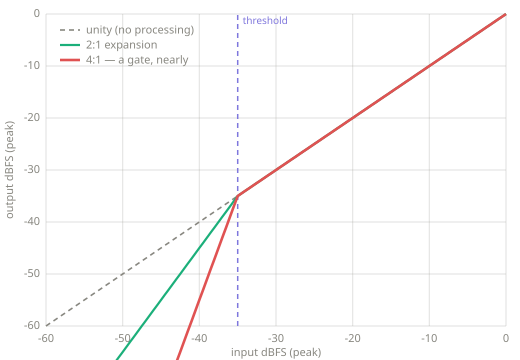
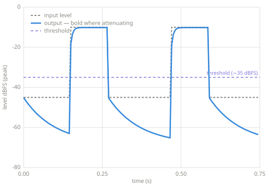

Expanding¶
An expander is the mirror image of a compressor: it turns down the quiet parts instead of the loud ones, increasing the dynamic range. At extreme settings it becomes a noise gate.
Chapter 6 — companding. The inverse of Compression; a gate is its extreme setting.
Intuition¶
A compressor shrinks the gap between loud and quiet by pulling the loud parts down. An expander widens the gap by pushing the quiet parts down. Below a chosen threshold, the quieter the signal, the more it is attenuated.
Typical uses include pushing down hiss or microphone bleed in the gaps between notes, restoring dynamics to over-compressed material, and gating, which mutes a drum microphone except while the drum is struck.
The word companding combines compressing and expanding: the two effects are the same machinery working in opposite directions around a threshold, and the pair gives this chapter its name.
Key parameters¶
| Parameter | What it controls |
|---|---|
| Threshold | The level (dBFS) below which attenuation begins. |
| Ratio | How hard the signal is pulled down below threshold. 2:1 doubles the dB drop; a very high ratio approaches a gate. |
| Range | The maximum attenuation; how far down the quiet parts may be pushed. |
| Attack | How fast the expander opens (eases off) when the signal rises above threshold (ms). |
| Release | How fast it closes (attenuates) when the signal falls below (ms). |
How it works¶
The same detect → map → smooth → apply pipeline, with the transfer function bent the opposite way from a compressor:
- Detect the level (peak or RMS).
- Compare with the threshold. Above it, do nothing. Below it, compute an attenuation that grows with the distance below threshold (scaled by the ratio), limited by the range.
- Smooth with the attack (opening) and release (closing) time constants.
- Apply the gain.
A gate is an expander with a high ratio and a deep range. Below the threshold the signal drops toward silence rather than easing down.

The expander's transfer curve bends down below the threshold. On the Compression page's figure the bend is above it. The steep red curve is close to a gate.

The expander in time (code/make_figures.py, using this page's implementation). The
output is bold where the expander is attenuating, in the quiet stretches. These are
the sections a compressor ignores.
Pseudocode¶
EXPAND(x, threshold, ratio, range, attack, release)
gain ← 0
for each sample s in x
level ← 20·log10(|s|) ▷ dBFS (peak)
if level < threshold
target ← max((level − threshold) · (ratio − 1), range)
else
target ← 0
gain ← SMOOTH(gain, target, attack, release)
emit s · LINEAR(gain)
Reference implementation (Python)¶
import math
def expand(x, sr, threshold_db=-40.0, ratio=2.0, range_db=-40.0,
attack_ms=5.0, release_ms=100.0):
"""Feed-forward downward expander — pure standard library, no dependencies.
Below threshold_db it attenuates, increasing dynamic range. A high ratio
with a deep range_db turns it into a noise gate.
x: list of mono samples in [-1, 1]
sr: sample rate, in samples per second
Returns a new list of samples.
"""
atk = math.exp(-1.0 / (sr * attack_ms / 1000.0))
rel = math.exp(-1.0 / (sr * release_ms / 1000.0))
eps = 1e-9
y = []
env_db = 0.0 # smoothed gain, in dB (<= 0)
for sample in x:
level_db = 20.0 * math.log10(abs(sample) + eps)
under = threshold_db - level_db # positive when below threshold
target = -under * (ratio - 1.0) if under > 0.0 else 0.0
target = max(target, range_db) # floor the attenuation
# open (toward less attenuation) fast; close (toward more) on release
coeff = atk if target > env_db else rel
env_db = coeff * env_db + (1.0 - coeff) * target
y.append(sample * 10.0 ** (env_db / 20.0))
return y
Pitfalls
- Chattering. When the level hovers at the threshold, the expander or gate flickers open and shut. Production gates add hysteresis (separate open and close thresholds) and a hold time.
- Chopped tails. A release that is too fast swallows reverb tails, breaths, and note decays: quiet material that should be kept.
- Ratio direction. Expansion attenuates below threshold, and compression attenuates above it. Confusing the two sides is the classic beginner error.
Related effects¶
- Compression: the inverse; it tames the loud parts above a threshold.
- Noise gate: an expander with a high ratio and deep range; silence below threshold.
- Measuring sound and Envelopes: the level detector and one-pole follower this effect is built from.
Learn more¶
- Udo Zölzer (ed.), DAFX: Digital Audio Effects, 2nd ed., Wiley — its
compexp.mdoes compression and expansion in one expression. - Reference implementations: dafx, a combined compressor/expander, and sox, expansion via transfer-curve breakpoints. Context in the References appendix.